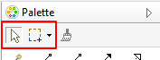
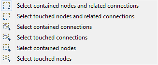
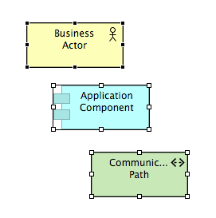

Palette Selection Tools
There are two selection tools available in the Palette. These are used to select the objects in a diagram in various ways.

The selection tools in the Palette
The first tool (selection tool) is primarily used to select elements (boxes). When dragging a marquee area around elements and connections with this tool, only the elements (boxes) will be selected.
The second tool (marquee tool) is activated by a drop-down button and is used to select both elements and connections in various ways:

The selection tool options
You can add elements or connections to a selection with the selection tool by holding down the Ctrl key and clicking on the element or connection. The same operation can be used to remove an element or connection from a selection.
When several elements or connections are selected, one will be marked with dark handles. This is called the primary selection.

Three elements selected, topmost is the primary selection
The primary selection is used with the alignment tools. You can change which element or connection is the primary selection with the selection tool by holding down the Shift key and clicking the element or connection you wish to make the primary selection.
 Tip: Pan the View using the selection tool.
Tip: Pan the View using the selection tool.
If you select the first selection tool from the Palette, click somewhere on the View to give it the focus and then hold the Space bar down the cursor will change to a hand and you can pan the View. You can also pan around the View using the middle mouse button.